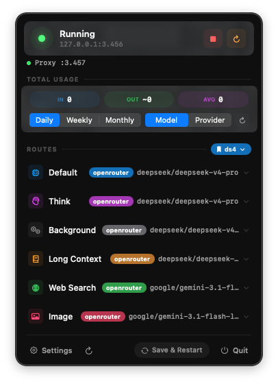
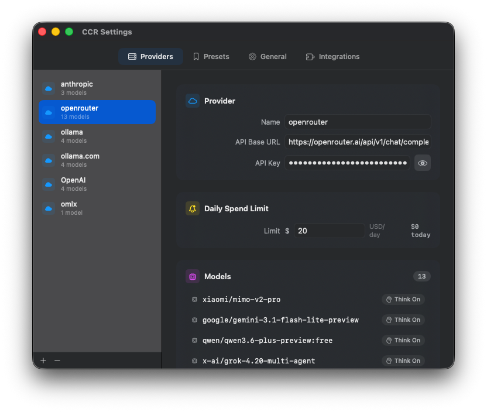

Control routes, track tokens, and manage CCR directly from your macOS menu bar.


Start, stop, and restart Claude Code Router directly from the menu bar. No more terminal switching required.
Get real-time insights into your token usage and request counts. Stay informed without breaking your focus.
Easily switch between Default, Think, and Background routes with a visual interface that makes management effortless.
Built with Swift for macOS. A lightweight Menu Bar Extra that lives where you work, with zero Dock footprint.
Download the latest CCR.Menu.Bar.zip from the GitHub releases page.
Unzip it and drag CCR Menu Bar.app to your Applications folder.
Open the app and grant necessary permissions if prompted. Look for the CCR icon in your menu bar.
Note: Release builds are for Apple Silicon Macs running macOS 14.0 or later. If macOS blocks the app, open System Settings → Privacy & Security and choose Open Anyway.